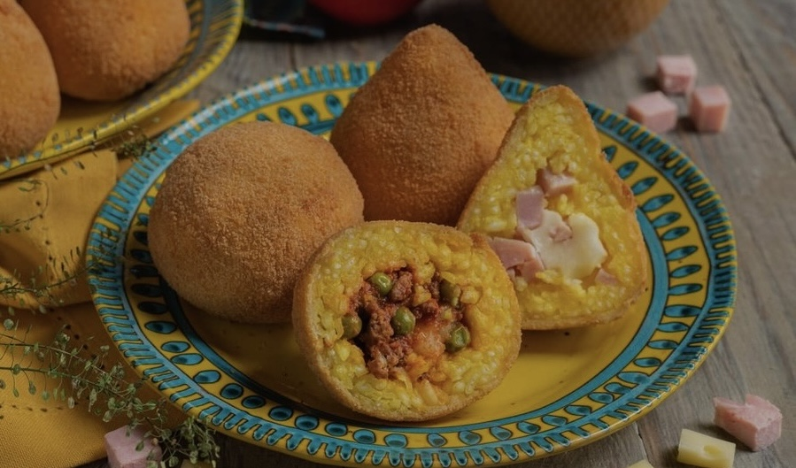
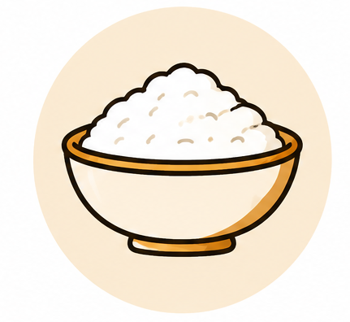
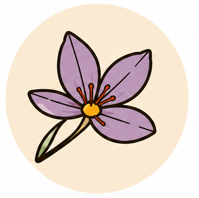
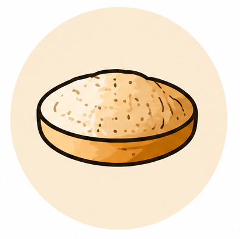
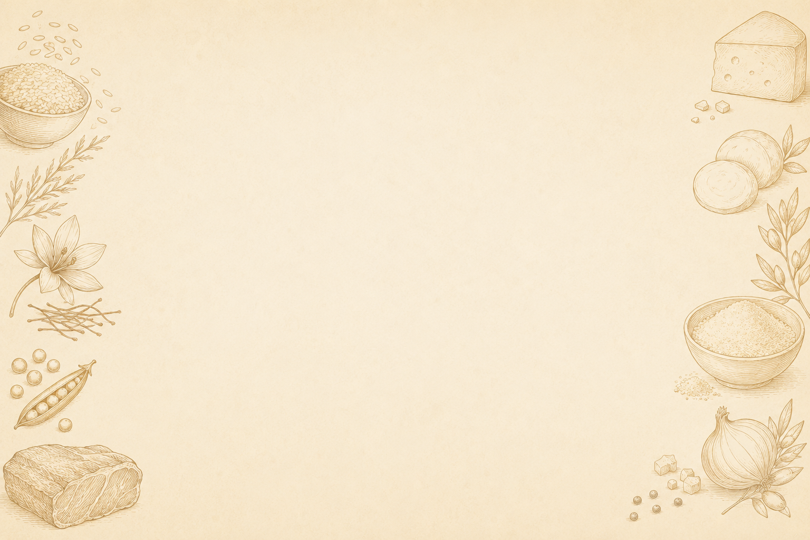
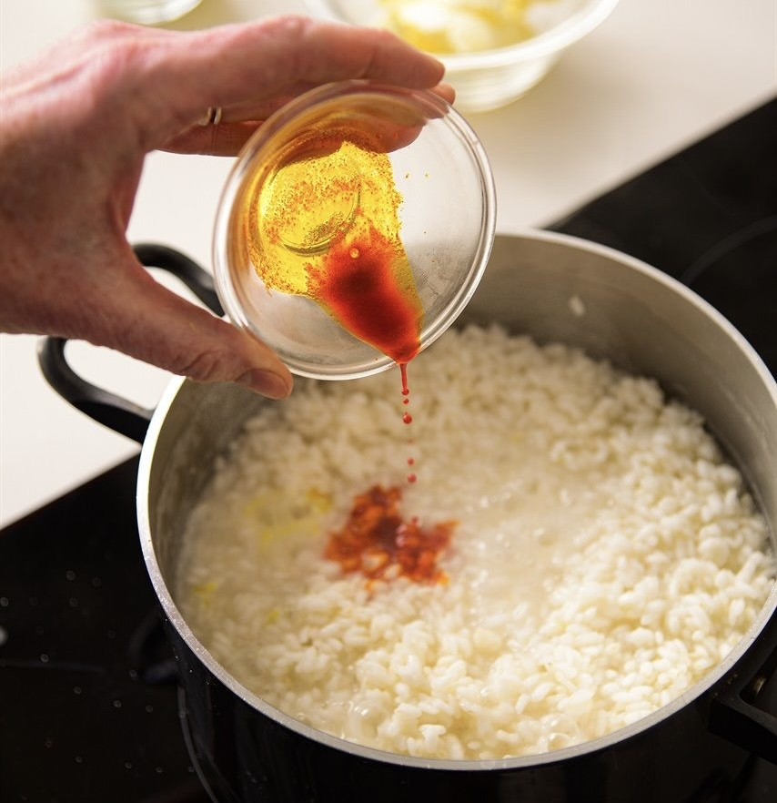
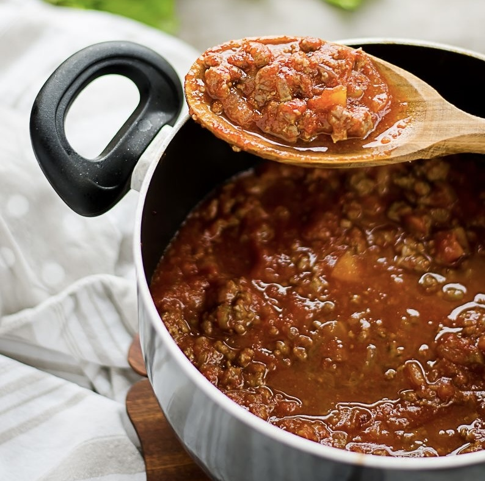
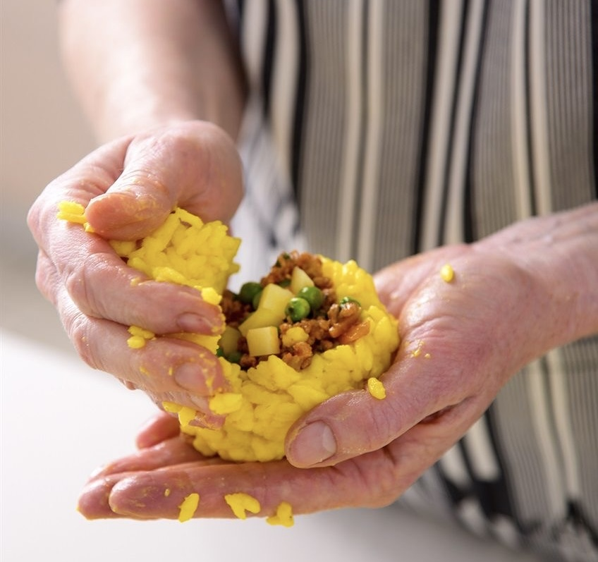
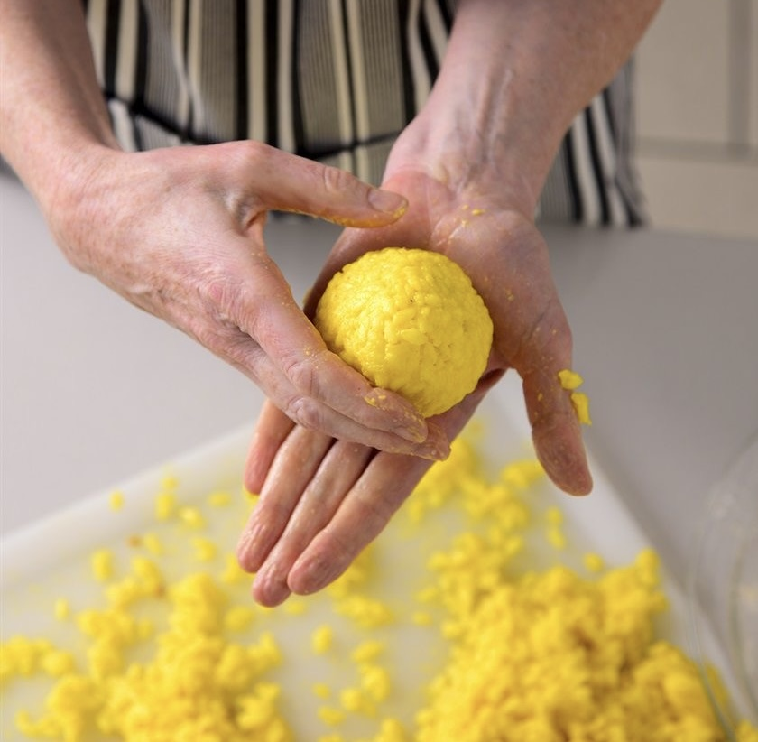
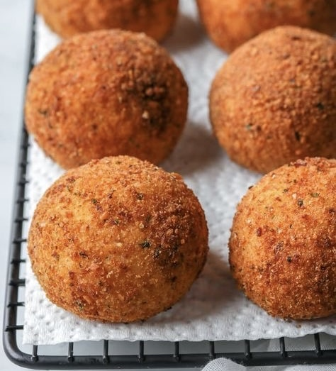

PRIMA DI INIZIARE
Prepara gli ingredienti!

Utilizza un riso adatto a trattenere bene l'amido

Non dimenticare lo zafferano per dare colore e gusto
Aspetta che il riso sia completamente freddo prima di formare gli arancini
Non esagerare con il ripieno, altrimenti gli arancini potrebbero rompersi

Cospargi gli arancini di pangrattato per ottenre una crosta croccante
Friggi l'arancino in olio caldo al punto giusto
Scegli il tuo arancino preferito



La preparazione degli arancini passo dopo passo







